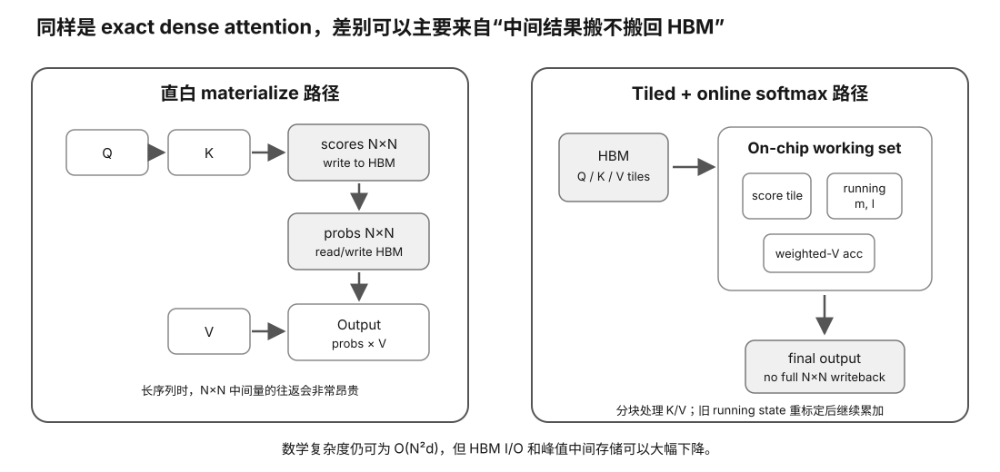

真实问题：同样是精确 attention，为什么“少存中间结果、多做一点计算”的 kernel 反而可能更快？
你应理解 Lesson 02–04 的线程组织、片上内存复用与 bandwidth roof。不会推导 softmax 也可以继续：本节关注的是怎样通过 tiling/online reduction 减少大中间张量的 HBM 往返。
scores = QKᵀ / √d probs = softmax(scores) out = probs V
数学本身没有问题。问题在于一个直白实现很容易把 scores 和 probs 变成巨大的 N×N 中间矩阵，并在不同 kernel 之间写回/读回 HBM。
| 序列长度 N | 两个 fp16-like N×N 矩阵 / head | 32 heads |
|---|---|---|
| 1024 | 4 MiB | 0.125 GiB |
| 2048 | 16 MiB | 0.5 GiB |
| 4096 | 64 MiB | 2 GiB |
| 8192 | 256 MiB | 8 GiB |
| 16384 | 1 GiB | 32 GiB |
这张表是教学用 materialization 模型：它说明“如果把两份 N×N 中间量真的落到显存”会有多夸张，不代表某个具体框架的实际峰值显存。
GPU 很擅长矩阵乘，但如果每一阶段都：
compute → write HBM → next kernel → read HBM
大量时间会花在数据搬运，而不是 Tensor Core / matrix unit 真正做乘加。
Q tile × K tile → small score tile → normalize incrementally → accumulate V contribution → discard local score tile
这和我们前面 GEMM tiling 的直觉一样：让小块数据留在更快的 on-chip memory 中反复使用。
普通稳定 softmax：
m = max(x) softmax(xᵢ) = exp(xᵢ-m) / Σ exp(xⱼ-m)
看起来必须先知道整行最大值和总和，才能输出任何一个元素。
对每个 query row 维护三个量：
m = running max l = running exp-sum a = running weighted-V accumulator
新 score block 到来时，先得到新的最大值 m'，然后把旧状态乘上 exp(m-m') 重标定，再把新 block 加进去。
m' = max(m, max(block)) α = exp(m - m') l' = α l + Σ exp(score - m') a' = α a + Σ exp(score - m') V
最后：
out = a / l
这样你可以一块一块处理 K/V，而不需要把整行 scores 保存在 HBM。
它不是一条“Flash 指令”。更好的心智模型是：
tiling + online stable softmax + fused accumulation + on-chip reuse + GPU-aware scheduling
目标是在保持 exact dense attention 数学结果的同时，减少 HBM 读写和中间 materialization。

全量 dense prefill 仍要做大量 QK dot products：
O(N²d)
FlashAttention 主要改变的是 IO complexity 和中间存储，不是把 exact dense attention 变成 O(N)。
因为“算法已经 IO-aware”不代表 GPU 被喂满。第二代继续优化：
这正是 Slice 02 的 latency hiding / occupancy 与 Slice 03 的 shared memory / tiling 回到真实 LLM kernel 的地方。
Prefill 是很多 query token 一起对很多 K/V 做 attention，N×N 结构最明显。
Decode 通常只有一个或很少的新 query token，对长 KV cache 做读取，瓶颈常更偏 KV bandwidth / cache layout / GQA/MQA。
| 技术 | 主要减少什么 |
|---|---|
| GQA / MQA | KV heads / KV bytes |
| Paged KV | KV 分配与碎片/复用问题 |
| FlashAttention-style | attention 中间 IO/materialization |
| Continuous batching | 服务端空闲执行槽 |
硬件门槛：L0；真机增强路径 L1/L2。
成本：0 元主路径。
风险：safe。
替代路径：无 GPU 时做 online-softmax / I/O 模型；真机只用于验证 backend 是否真的选中目标 kernel。
做 Experiment 19：online softmax I/O model；有可用 GPU/backend 时做 Experiment 20：real SDPA backend probe。
反馈重点：确认减少的是中间矩阵的高成本读写，而不是偷偷改变 softmax 数学结果。
画出 naive attention 与 tiled/online-softmax 的 HBM↔on-chip 数据流，并写出“此证据不证明什么”：它不自动证明你的当前 runtime 已使用目标 kernel。
遇到任何新 attention kernel，先问：减少哪一级 memory traffic？改变数学吗？哪些 shape/dtype 生效？fallback 条件是什么？
QK^T → materialize score matrix → softmax → read/write score matrix → multiply V
长序列时，中间 attention matrix 很大。IO-aware kernel 通过 tiling，把更小的数据块留在片上存储中，边算边归一化，减少对 HBM/VRAM 的往返。
标准 dense attention 的主要数学量级仍然是 O(n²)。Flash-style 优化没有把它魔法变成 O(n)，但减少了高代价 memory traffic，因此在真实 GPU 上可以显著更快、更省 memory。
用小矩阵纸上计算“materialize 全 score matrix”和“tile 后只保留局部块”的内存流量差异。机制可以跨 CUDA、ROCm、Metal 等 backend 迁移。